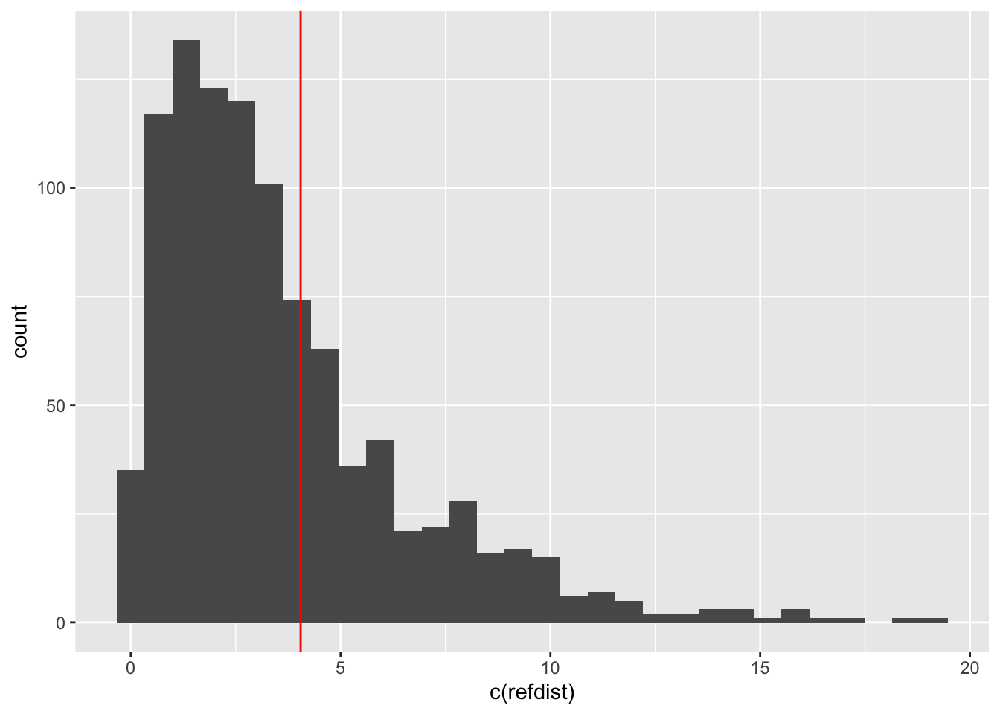

11.6 Exercises
11.6.1 The Glasgow Coma Scale
In the 1970’s, neurosurgeons in Glasgow (Teasdale and Jennett 1974) began to develop a scale for assessing the severity of brain injuries. The Glasgow Coma Scale sought to provide a clear and consistent way of assessing the condition of a patient through scores which evaluated eye opening, verbal and motor responses to stimuli. Positive scores represent better response and an overall score combines the three components. The scale subsequently became established internationally as a very valuable tool in clinical practice and in research. Teasdale et al. (2014) give a review after 40 years of its use, including reference to an evaluation of how the score relates to the probability of the death of the patient in a large clinical trial (Collaborators et al. 2008).
The trial involved a large number of subjects but the data can be represented in compact form by recording the number of people with a particular coma scale score and the number of those who subsequently died within 14 days of injury. The code below sets this up.
coma <- data.frame(
score = 3:14,
n = c(667, 455, 478, 677, 946, 709, 633, 690, 748, 962, 1498, 1499),
death = c(342, 275, 232, 231, 241, 152, 113, 108, 52, 65, 76, 51))Investigate the relationship between the proportion of deaths and the coma score. Consider whether the log-odds scale for the proportion of deaths creates a simple form of relationship.
Solution
A plot of proportions of deaths against coma scale already indicates a strong association with mortality, with higher scores indicating better responses and lower probability of death. The log-odds scale does indeed create a plot which is approximately linear.
coma <- data.frame(
score = 3:14,
n = c(667, 455, 478, 677, 946, 709, 633, 690, 748, 962, 1498, 1499),
death = c(342, 275, 232, 231, 241, 152, 113, 108, 52, 65, 76, 51)) %>%
mutate(p = death / n)
ggplot(coma, aes(score, p)) + geom_point() +
ylab('Proportion of deaths') + scale_x_continuous(breaks = 3:14)
coma <- mutate(coma, log_odds = log(p / (1 - p)))
ggplot(coma, aes(score, log_odds)) + geom_point() +
ylab('Proportion of deaths') + scale_x_continuous(breaks = 3:14)

11.6.2 Bissell data
Write code to evaluate and plot the likelihood function for the simple proportional model with the Bissell data described in Section 11.3.
Solution
As ever, there are many ways in which this can be done. The solution below follows the pattern of the likelihoods computed in the Section on logistic regression.
p <- seq(0.0125, 0.0175, length = 50)
pmat <- matrix(p, ncol = 1)
l.fn <- function(x) prod(dpois(bissell$Flaws, x * bissell$Length))
likelihood <- apply(pmat, 1, l.fn)
dfrm <- data.frame(p, likelihood)
ggplot() + geom_line(aes(p, likelihood), data = dfrm) +
geom_vline(aes(xintercept = model$coefficients), linetype = 2, col = 'red') +
geom_text(aes(model$coefficient, min(likelihood),
label = as.character(round(model$coefficients, 4))),
col = 'red', nudge_y = 0)
11.6.3 Vasoconstriction data
For the vasoconstriction data, Finney (1947) implies that a model which relates the presence of vaso-constriction to the sum of log(Volume) and log(Rate) may be effective. Use logistic regression to fit this model and superimpose the fitted curve on a display of the data.
Solution
As ever, there are many ways in which this can be done. The solution below follows the pattern of the likelihoods computed in the Section on logistic regression.
data(vasoconstriction, package = 'rpanel')
library(tidyverse)
logVR <- log(vasoconstriction$Volume) + log(vasoconstriction$Rate)
model <- glm(Vasoconstriction ~ logVR, family = 'binomial', data = vasoconstriction)
rng <- range(logVR)
vrgrid <- seq(rng[1], rng[2], length = 50)
pgrid <- predict(model, newdata = data.frame(logVR = vrgrid), type = "response")
ggplot() + geom_jitter(aes(log(Rate) + log(Volume), Vasoconstriction),
width = 0, height = 0.02, data = vasoconstriction) +
geom_line(aes(vrgrid, pgrid, col = I("blue")))
11.6.4 The Framingham heart study
This famous study followed up the health of a large number of people in Framingham, in the United States, over a long period. A version of the data suitable for teaching (not research) is available in the cvdd dataframe in the riskCommunicator package. How would you use these data to create a risk model for death within 10 years?
11.6.5 The shape of a log-likelihood function
The log-likelihood function for logistic regression with the ethylene data, shown in the Section on likelihood in this chapter and viewed through the rp.logistic function, has a long diagonal ridge with very steep sides. That is rather an awkward shape. What happens if we change the parameterisation of the linear predictor in the model from \(\alpha + \beta x\) to \(\alpha + \beta (x - \bar{x})\), where \(\bar{x}\) denotes the mean of the \(x_i\) values?
Investigate this by creating a new variable which subtracts the mean from the Concentration values, then refit the model with this variable and re-run the code shown earlier in the chapter to produce a contour plot. You will have to experiment with different ranges of alpha and beta to see the peak of the log-likelihood function.
What does this plot tell you? What are the implications for the parameter estimates and a confidence region?